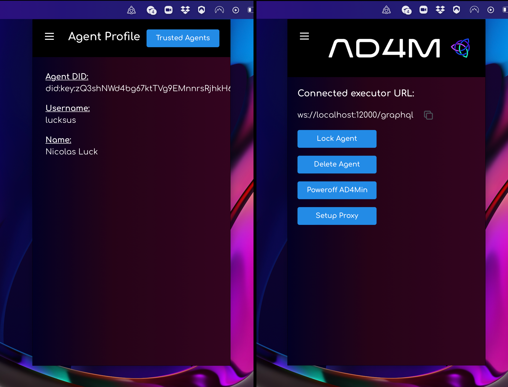

Getting Started
1. Install AD4Min
Download the latest version of AD4Min, the complete AD4M implementation with admin UI from its GitHub release page and run/install it.
After successful agent initialization you should see an AD4M system-tray icon which will bring up an AD4M pop-up window on click: 
2. Connect UI client using ad4m-connect
The AD4M-executor serves a GraphQL interface for UIs to connect to and remote control the executor to use Languages, query and modify Perspectives etc. That interface implements a capability-based security mechanism which allows for making the local interface available publicly via a proxy ("setup proxy" button) so that mobile UIs can call in to your ad4m-executor run at home, but also to manage access to certain Perspectives/Neighbourhoods only to certain UIs.
Anyway, to not confront you with the complexity of writing code for requesting a capability token and injecting it into a GraphQL client right at the start of your AD4M journey, there is ad4m-connect to do all of this for you and just deliver an initialized and usable Ad4mClient object.
...
3. Use Ad4mClient to share links in a Neighbourhood
Languages
For creating an expression we need to select a language that we create an expression in:
const languages = await ad4mClient.languages.all()
const noteIpfsAddress = languages.find(l => l.name === 'note-ipfs').address
Creating an Expression
const exprAddress = await ad4mClient.expression.create("A new text note", noteIpfsAddress)
Creating a Perspective and linking that new Expression
const perspectiveHandle = await ad4mClient.perspective.add("A new perspective on apps...")
await ad4mClient.perspective.addLink(
perspectiveHandle.uuid,
new Link({
source: 'root',
target: exprAddress
})
)
Publishing that local Perspective by turning it into a Neighbourhood
The back-bone of a Neighbourhood is a LinkLanguage - a Language that enables the sharing
and thus synchronizing of links (see LinksAdapter in Language.ts).
While there can and should be many different implementations
with different trade-offs and features (like membranes etc.),
there currently is one fully implemented and Holochain based LinkLanguage with the name Social Context.
It is deployed on the current test network (Language Language v0.0.5) under the address:
QmZ1mkoY8nLvpxY3Mizx8UkUiwUzjxJxsqSTPPdH8sHxCQ.
Creating our unique LinkLanguage clone through templating
But we should not just use this publicly known Language as the back-bone for our new Neighbourhood, since we need a unique clone. So what we want is to use this existing Language as a template and create a new copy with the same code but different UUID and/name in order to create a fresh space for our new Neighbourhood.
What parameters can we adjust when using it as template? Let's have a look at the Language's meta information:
const socialContextMeta = await ad4mClient.languages.meta("QmZ1mkoY8nLvpxY3Mizx8UkUiwUzjxJxsqSTPPdH8sHxCQ")
console.log(socialContextMeta)
Which should yield something like this:
{
name: 'social-context',
address: 'QmZ1mkoY8nLvpxY3Mizx8UkUiwUzjxJxsqSTPPdH8sHxCQ',
description: 'Holochain based LinkLanguage. First full implementation of a LinkLanguage, for collaborative Neighbourhoods where every agent can add links. No membrane. Basic template for all custom Neighbourhoods in this first iteration of the Perspect3vism test network.',
author: 'did:key:zQ3shkkuZLvqeFgHdgZgFMUx8VGkgVWsLA83w2oekhZxoCW2n',
templated: false,
templateSourceLanguageAddress: null,
templateAppliedParams: null,
possibleTemplateParams: [ 'uuid', 'name', 'description' ],
sourceCodeLink: 'https://github.com/juntofoundation/Social-Context'
}
The field possibleTemplateParams tells us that we can set a UUID and override name and description.
Let's leave description but change the name.
The function languages.applyTemplateAndPublish() takes an object as JSON as second parameter like so:
const uniqueLinkLanguage = await ad4mClient.languages.applyTemplateAndPublish("QmZ1mkoY8nLvpxY3Mizx8UkUiwUzjxJxsqSTPPdH8sHxCQ", JSON.stringify({"uuid": "84a329-77384c-1510fb", "name": "Social Context clone for demo Neighbourhood"}));
And then use this new LinkLanguage in our Neighbourhood:
const meta = new Perspective()
const neighbourhoodUrl = await ad4mClient.neighbourhood.publishFromPerspective(
perspectiveHandle.uuid,
uniqueLinkLanguage.address,
meta
)
console.log(neighbourhoodUrl) // => neighbourhood://Qm123456789abcdef
Joining a Neighbourhood (on another node/agent)
Assume everything above happened on Alice's agent. Alice now shares the Neighbourhood's URL with Bob. This is what Bob does to join the Neigbourhood, access it as a (local) Perspective and retrieve the Expression Alice created and linked there:
const joinedNeighbourhood = await ad4mClient.neighbourhood.joinFromUrl(neighbourhoodUrl)
const links = await ad4mClient.perspective.queryLinks(joinedNeighbourhood.uuid, new LinkQuery({source: 'a'}))
links.forEach(async link => {
const address = link.data.target
const expression = await ad4mClient.expression.get(address)
const data = JSON.parse(expression.data)
console.log(data) //=> "A new text note"
})